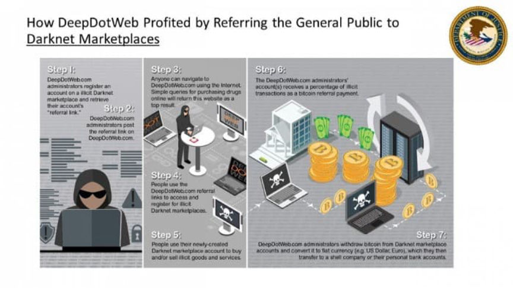
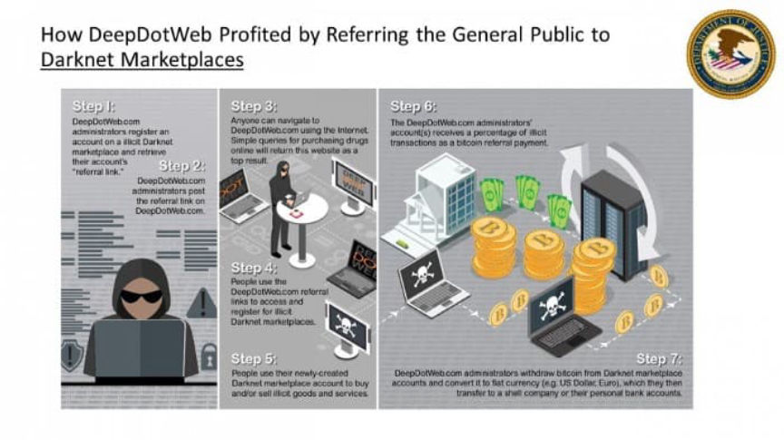

DeepDotWeb Admin Admits Laundering $8.4 Million in Bitcoin
~2 min read | Published on 2021-03-31, tagged DarkWeb, General-News, Sentenced, admin using 452 words.
Tal Prihar, the administrator of the darkweb news site DeepDotWeb, pleaded guilty to one count of conspiracy to commit money laundering. He admitted laundering $8.4 million in cryptocurrency earned through the use of referral links on DeepDotWeb.com.
Prihar created and ran DeepDotWeb, a darkweb news and link portal, from 2013 until his arrest in May 2019. DeepDotWeb was one of the first sites to cover news with an explicit focus on the darkweb. The site quickly became the sole authoritative source of marketplace and forum links for many years.

Through the use of marketplace referral links, Prihar and the alleged designer of DeepDotWeb, Michael Phan, together earned more than $15 million in Bitcoin. The co-conspirators laundered their earnings through shell companies across the world, including companies inconspicuously referenced on DeepDotWeb.com. The indictment lists some of the companies used in the conspiracy:
WwwCom Ltd. M&T Marketing Imtech O.T.S.R. Biztech Tal Advanced Tech
Darknetlive has, along with others, extensively covered the case from the same hour the DeepDotWeb seizure banner appeared (although some discussion occurred on Twitter–on which Darknetlive has been suspended).
DOJ Announces DeepDotWeb Seizure DeepDotWeb Admin Talks About His Case from Behind Bars DeepDotWeb seized, suspected admins arrested DeepDotWeb Dark web resource dies with FBI seizure Updated Information About the Investigation into DeepDotWeb
Recent activity related to the case included several motions for extensions to file pretrial motions. Prihar’s attorney cited the complexity of the case. The case updates directly preceding Prihar’s change of plea hearing involved a request for a protective order governing discovery followed by a judge signing off on the protective order. It appears as if through March 16, 2021, involved parties were still headed to a jury trial in an open court.

Prihar was indicted for money laundering under 18 U.S. Code § 1956 - laundering of monetary instruments. The charge carries a prison sentence of up to twenty years and a financial penalty of up to double the value of the laundered instruments. A prison sentence is likely unavoidable. Prihar likely qualifies for a steep enhancement and very few of the offense level reductions under federal sentencing guidelines. Prihar is scheduled for sentencing on August 2, 2021. As a part of the plea agreement, Prihar agreed to forfeit $8.4 million in holdings as well as the DeepDotWeb domain name.

Prihar moved from Israel to Brazil in 2017. Phan, who grew up with Prihar, apparently remained in Israel. Prihar was arrested at an airport in France where he was waiting for a connecting flight between Israel and Brazil. Phan was arrested in Israel and is currently still in Israel. There seems to be little to no progress in extraditing Phan to the United States.
Prihar created and ran DeepDotWeb, a darkweb news and link portal, from 2013 until his arrest in May 2019. DeepDotWeb was one of the first sites to cover news with an explicit focus on the darkweb. The site quickly became the sole authoritative source of marketplace and forum links for many years.
DeepDotWeb provided news about darkweb cases as well as links to markets and forums
Through the use of marketplace referral links, Prihar and the alleged designer of DeepDotWeb, Michael Phan, together earned more than $15 million in Bitcoin. The co-conspirators laundered their earnings through shell companies across the world, including companies inconspicuously referenced on DeepDotWeb.com. The indictment lists some of the companies used in the conspiracy:
Darknetlive has, along with others, extensively covered the case from the same hour the DeepDotWeb seizure banner appeared (although some discussion occurred on Twitter–on which Darknetlive has been suspended).
Recent activity related to the case included several motions for extensions to file pretrial motions. Prihar’s attorney cited the complexity of the case. The case updates directly preceding Prihar’s change of plea hearing involved a request for a protective order governing discovery followed by a judge signing off on the protective order. It appears as if through March 16, 2021, involved parties were still headed to a jury trial in an open court.
Tal Prihar, former crypto millionaire
Prihar was indicted for money laundering under 18 U.S. Code § 1956 - laundering of monetary instruments. The charge carries a prison sentence of up to twenty years and a financial penalty of up to double the value of the laundered instruments. A prison sentence is likely unavoidable. Prihar likely qualifies for a steep enhancement and very few of the offense level reductions under federal sentencing guidelines. Prihar is scheduled for sentencing on August 2, 2021. As a part of the plea agreement, Prihar agreed to forfeit $8.4 million in holdings as well as the DeepDotWeb domain name.

DeepDotWeb's referral link earnings.
Prihar moved from Israel to Brazil in 2017. Phan, who grew up with Prihar, apparently remained in Israel. Prihar was arrested at an airport in France where he was waiting for a connecting flight between Israel and Brazil. Phan was arrested in Israel and is currently still in Israel. There seems to be little to no progress in extraditing Phan to the United States.